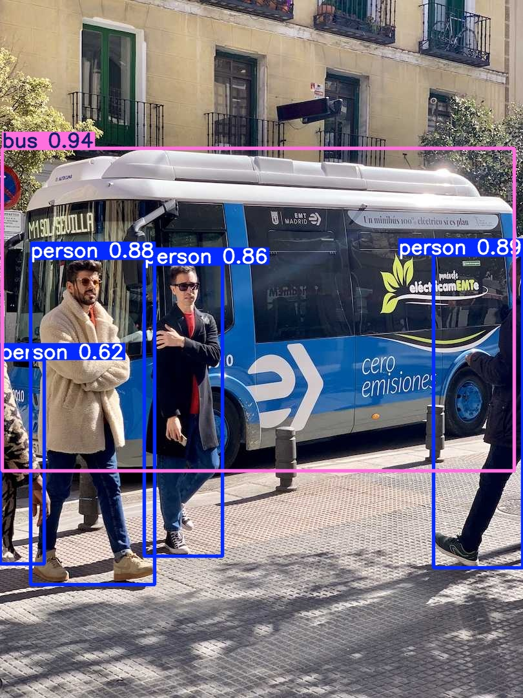
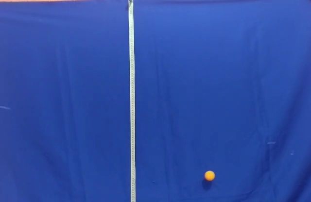
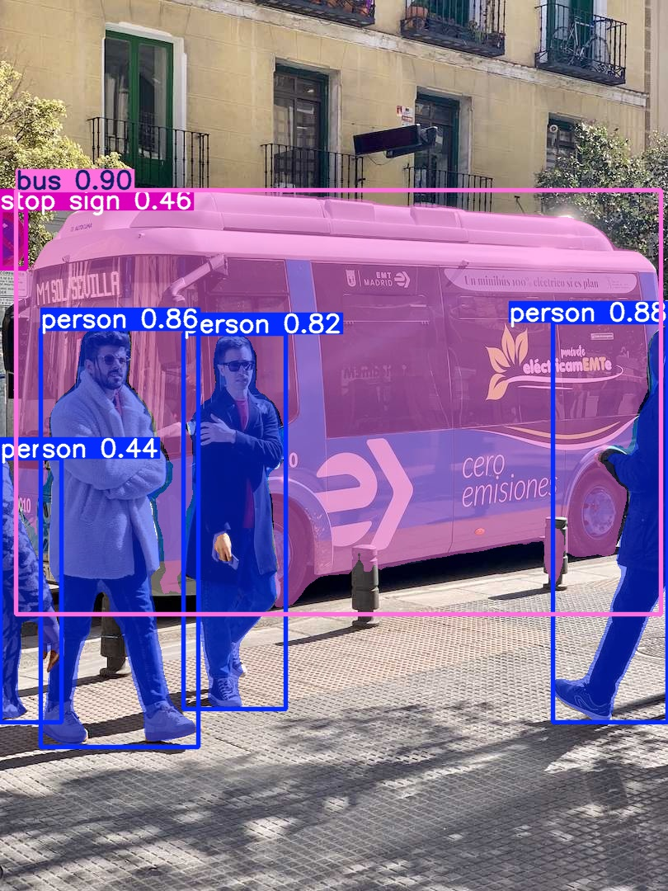

Percurso da aula
- 4.1Da classe à máscaraCompare as respostas possíveis para a mesma cena.Começar →
- 4.2Detectar e avaliarLeia caixas, confiança e IoU numa inferência real.Ver resultado →
- 4.3Seguir no tempoAssocie detecções consecutivas por um ID.Acompanhar →
- 4.4Medir pela máscaraConte pixels e separe medida de calibração.Medir →
- 4.5Levar ao dispositivoPercorra Raspberry Pi, Hailo e OAK-D sem esconder o formato do modelo.Ver fluxos →
- 4.6Executar os exemplosInstale o ambiente e rode scripts pequenos.Abrir guia →
4.1 Uma cena, quatro tipos de resposta
A entrada é uma matriz de pixels. A saída depende da pergunta feita ao modelo. Classificação, detecção, segmentação e rastreamento não são nomes diferentes para a mesma tarefa.
| Tarefa | Saída | Pergunta respondida | O que ainda falta |
|---|---|---|---|
| Classificação | classe e escore para a imagem | O que predomina na cena? | Não localiza cada objeto. |
| Detecção | classe, confiança e caixa por objeto | O que há e onde está? | A caixa inclui fundo. |
| Segmentação semântica | uma classe por pixel | A que região pertence cada pixel? | Objetos da mesma classe podem ficar unidos. |
| Segmentação por instância | máscara separada por objeto | Quais pixels pertencem a cada objeto? | Não mantém identidade no tempo. |
| Rastreamento | detecção mais ID ao longo dos quadros | É o mesmo objeto do quadro anterior? | Oclusões podem trocar ou perder IDs. |

O modelo conhece um vocabulário finito. Um detector pré-treinado no COCO conhece 80 categorias. “Formiga” e “bola de pingue-pongue” não fazem parte desse vocabulário. Uma forma parecida com uma categoria conhecida pode receber outro rótulo, ou não produzir detecção.
4.2 YOLO: da imagem às caixas
YOLO realiza a detecção numa passagem pela rede. Para cada candidato preservado, o resultado contém uma classe, um escore de confiança e quatro coordenadas. Neste exemplo usamos o formato (x1, y1, x2, y2): canto superior esquerdo e canto inferior direito, medidos em pixels a partir do topo esquerdo.
modelo = YOLO(caminho_do_modelo)
resultado = modelo.predict(imagem, conf=0.25, device="cpu")[0]
for caixa, confianca, classe in zip(
resultado.boxes.xyxy,
resultado.boxes.conf,
resultado.boxes.cls,
):
x1, y1, x2, y2 = caixa
nome = resultado.names[int(classe)]O limiar conf=0.25 descarta previsões abaixo de 0,25. Esse número não é uma garantia de 25% ou 95% de acerto: é um escore do modelo, útil para ordenar e filtrar resultados. Sua calibração varia com o modelo e com os dados.
Resultado executado em CPU

| Classe | Confiança | Caixa (x1, y1, x2, y2) |
|---|---|---|
| bus | 0,940 | (4, 229, 796, 728) |
| person | 0,888 | (671, 395, 810, 879) |
| person | 0,878 | (47, 400, 239, 904) |
| person | 0,856 | (223, 409, 344, 860) |
| person | 0,622 | (0, 556, 69, 872) |
As caixas cortadas na borda não são erro de coordenada: há pessoas parcialmente fora da imagem. O pixel x=0 marca justamente o limite esquerdo.
IoU: quanto duas regiões se sobrepõem?
A interseção sobre união, ou IoU, divide a área compartilhada pela área coberta por pelo menos uma das duas regiões:
\[\operatorname{IoU}(A,B)=\frac{|A\cap B|}{|A\cup B|}\]
Se A vai de (0, 0) a (100, 100) e B vai de (50, 0) a (150, 100), a interseção tem 5.000 px² e a união tem 15.000 px²: IoU = 1/3. Durante o pós-processamento, a supressão de não máximos usa a sobreposição para eliminar caixas repetidas da mesma classe. Na avaliação, a IoU pode comparar uma previsão com a anotação de referência. São comparações com finalidades diferentes.
Erros que uma imagem bonita pode esconder: falso positivo é uma detecção sem objeto correspondente; falso negativo é um objeto não detectado. Elevar o limiar costuma reduzir falsos positivos e também pode aumentar falsos negativos. A escolha precisa ser avaliada no conjunto e na aplicação.
Um limite observado: a bolinha do pêndulo

O script completo baixa o peso pequeno para o cache do usuário, executa na CPU, grava uma nova saída fora do Git e imprime as coordenadas.
python scripts/09_yolo_imagem.py4.3 Tracking: caixas ganham memória
Detectar cada quadro separadamente não diz se a pessoa 2 de agora é a pessoa 2 do quadro anterior. Um tracker associa detecções próximas e compatíveis e atribui um ID temporário. O argumento persist=True informa que os quadros chegam na ordem da mesma sequência.
while True:
ok, frame = video.read()
if not ok:
break
resultado = modelo.track(
frame,
persist=True,
tracker="bytetrack.yaml",
conf=0.25,
device="cpu",
)[0]
if resultado.boxes.id is not None:
ids = resultado.boxes.id.int().cpu().tolist()persist=True não treina o modelo e não guarda uma identidade universal. O ID só faz sentido dentro da sequência e do estado daquele tracker. Uma oclusão longa, objetos cruzando ou uma detecção perdida podem encerrar uma trajetória ou trocar IDs. Ao mudar de vídeo, reinicie o modelo/tracker.
python scripts/10_yolo_tracking.py videos/pendulo_trena.mp4
# ou, para a webcam:
python scripts/10_yolo_tracking.py 0Escolha uma classe que o modelo realmente conhece. No vídeo do pêndulo, o detector genérico pode não produzir caixas para a bolinha. Para rastreá-la, continue com cor/contorno, prepare anotações e treine um detector específico, ou use outra estratégia apropriada à medida.
Caso do acervo: várias formigas
O repositório formigas torna concreto um problema de múltiplos objetos. O arquivo rastreio.py abre datasets/videos_raw/ants.mp4, carrega models/best.pt, chama model.track(..., persist=True) e conserva, para cada ID, uma lista de centros. O arquivo run_croped.py usa uma transformação de perspectiva e referencia models/last.pt.
track_history = defaultdict(list)
resultado = modelo.track(frame, persist=True)[0]
if resultado.boxes.id is not None:
centros = resultado.boxes.xywh.cpu()
ids = resultado.boxes.id.int().cpu().tolist()
for (x, y, largura, altura), id_objeto in zip(centros, ids):
track_history[id_objeto].append((float(x), float(y)))Os pesos best.pt/last.pt e o vídeo ants.mp4 citados pelo código não estão versionados no acervo local ou no GitHub. Por isso, este capítulo não publica caixas inventadas nem afirma uma métrica de formigas. Recuperados os ativos, a validação deve manter sequências diferentes em treino, validação e teste; quadros vizinhos do mesmo vídeo são muito parecidos e podem inflar a avaliação.
Os limiares extremamente baixos do experimento antigo registram que aquele modelo precisava de revisão. Baixar o limiar não melhora o que a rede aprendeu: apenas aceita mais candidatos, inclusive ruído. Antes de contar formigas, revise exemplos de falsos positivos, falsos negativos, trocas de ID e o efeito de oclusões.
4.4 Da caixa aos pixels do objeto
Uma caixa é conveniente, mas sua área inclui fundo. A segmentação por instância devolve uma máscara binária para cada objeto: 1 nos pixels atribuídos à instância e 0 nos demais. O modelo usado aqui é yolo11n-seg.pt; um checkpoint de detecção comum não passa a produzir máscaras apenas porque mudamos o método chamado.
resultado = modelo.predict(
imagem,
conf=0.25,
device="cpu",
retina_masks=True,
)[0]
for mascara, classe in zip(resultado.masks.data, resultado.boxes.cls):
area_px = int(mascara.sum())
nome = resultado.names[int(classe)]
print(nome, area_px)
| Instância | Confiança | Área da máscara |
|---|---|---|
| bus | 0,899 | 262.715 px² |
| person | 0,885 | 21.955 px² |
| person | 0,863 | 50.394 px² |
| person | 0,822 | 35.075 px² |
| stop sign | 0,461 | 1.879 px² |
| person | 0,443 | 11.276 px² |
O detector e o segmentador não preservaram exatamente as mesmas instâncias: o segmentador encontrou também uma placa. Resultados de modelos diferentes devem ser comparados, não presumidos iguais.
De pixels para área física
A soma da máscara produz área em pixels. Se o objeto estiver num plano frontal e uma calibração válida fornecer uma escala constante s em milímetros por pixel, então:
\[A_{\rm física}=N_{\rm pixels}\,s^2\]
Na fotografia do ônibus, a perspectiva muda a escala com a posição. Portanto, os números acima não devem ser convertidos diretamente para metros quadrados. Uma medida física exige referência no mesmo plano, correção de perspectiva por homografia quando apropriada e propagação da incerteza da máscara e da calibração.
Para avaliar a máscara, a IoU usa pixels em vez de áreas de caixas: interseção é o número de pixels marcados nas duas máscaras; união é o número marcado em pelo menos uma.
python scripts/11_yolo_segmentacao.pyExtensão: segmentar por indicação
Modelos como SAM recebem uma imagem e uma indicação, por exemplo um ponto ou uma caixa, e devolvem máscaras candidatas. Isso muda a pergunta: em vez de escolher apenas entre classes fixas, o usuário indica a região de interesse. O prompt não transforma automaticamente a máscara em medida física, não resolve calibração e pode escolher o objeto errado. Como os checkpoints são grandes e a extensão é opcional, esta aula mantém SAM no nível conceitual.
4.5 Visão computacional perto da câmera
Treinamento e inferência são etapas distintas. É comum treinar no computador e converter o modelo para um formato aceito pelo acelerador. Em todos os dispositivos, o fluxo conserva as mesmas decisões:
captura → redimensionamento e cores → inferência → pós-processamento → coordenadas na imagem → visualização ou medida.
| Plataforma | Modelo no exemplo | Onde ocorre a inferência | O programa recebe |
|---|---|---|---|
| Raspberry Pi + OpenCV | nenhum, no filtro Canny | CPU do Raspberry Pi | quadro BGR como array NumPy |
| Raspberry Pi + Hailo | HEF de detecção com NMS | NPU Hailo | detecções agrupadas por classe |
| OAK-D + DepthAI v2 | BLOB OpenVINO compatível | processador da câmera | quadro e metadados de detecção |
Raspberry Pi: Picamera2 e OpenCV
Picamera2 entrega quadros como arrays NumPy, o formato que o OpenCV já manipula. A nomenclatura vem do libcamera: selecionar RGB888 produz no array a ordem B, G, R que o OpenCV espera. Por isso, a conversão correta usa COLOR_BGR2GRAY.
camera = Picamera2()
configuracao = camera.create_preview_configuration(
main={"size": (1280, 720), "format": "RGB888"},
)
camera.configure(configuracao)
camera.start()
quadro_bgr = camera.capture_array("main")
cinza = cv2.cvtColor(quadro_bgr, cv2.COLOR_BGR2GRAY)
bordas = cv2.Canny(cinza, 80, 160)O script mantém a captura em laço e encerra a câmera num bloco finally.
Hailo: o HEF define a interface executável
HEF é o arquivo compilado para uma arquitetura Hailo. O exemplo oficial do Picamera2 oferece uma interface síncrona curta: Hailo lê a forma da entrada e run executa o quadro. O recorte abaixo exige um HEF de detecção que já inclua pós-processamento NMS e um arquivo de rótulos correspondente. A ordem de canais também pertence ao contrato do modelo: o script recebe rgb ou bgr em vez de adivinhar.
ordem_modelo = "rgb" # confirme na documentação do HEF
formato_camera = "BGR888" if ordem_modelo == "rgb" else "RGB888"
with Hailo(str(caminho_hef)) as hailo:
altura, largura, _ = hailo.get_input_shape()
with Picamera2() as camera:
config = camera.create_preview_configuration(
lores={"size": (largura, altura), "format": formato_camera},
)
camera.configure(config)
camera.start()
quadro = camera.capture_array("lores")
saida_com_nms = hailo.run(quadro)Um HEF sem esse pós-processamento produz tensores com outro layout e precisa do decodificador específico do modelo. Também é necessário instalar Picamera2 0.3.20 ou posterior, driver e HailoRT compatíveis com a placa e um HEF compilado para a arquitetura presente.
Baixar 13_hailo_hef.pyOAK-D: câmera e rede no mesmo pipeline
O exemplo histórico do acervo usa DepthAI v2. Um ColorCamera envia a prévia ao YoloDetectionNetwork. O BLOB contém a rede para o dispositivo; âncoras, máscaras, número de classes e tamanho precisam corresponder exatamente ao modelo usado.
pipeline = dai.Pipeline()
camera = pipeline.create(dai.node.ColorCamera)
detector = pipeline.create(dai.node.YoloDetectionNetwork)
camera.setPreviewSize(416, 416)
detector.setBlobPath(str(blob))
detector.setNumClasses(80)
detector.setCoordinateSize(4)
detector.setAnchors([10, 14, 23, 27, 37, 58, 81, 82, 135, 169, 344, 319])
detector.setAnchorMasks({"side26": [1, 2, 3], "side13": [3, 4, 5]})
camera.preview.link(detector.input)passthrough devolve o quadro que realmente alimentou a rede; assim, quadro e detecções permanecem sincronizados. A API DepthAI v3 substituiu os nós específicos de YOLO por DetectionNetwork, mas este script preserva o fluxo v2 do material original e fixa o requisito depthai<3.
Como medir desempenho
- Latência: tempo entre capturar um quadro e obter sua resposta.
- Vazão: quantos quadros são concluídos por segundo.
- Qualidade: erros do modelo no mesmo conjunto e limiar.
- Condições: resolução, formato, versão do modelo, precisão numérica, aquecimento e hardware.
Filas maiores podem elevar a vazão e também deixar a resposta atrasada. Quantização pode reduzir custo e alterar resultados. Sem executar no equipamento físico, este material não atribui FPS nem equivalência de precisão a Hailo ou OAK-D.
4.6 Executar e investigar
Na pasta do tópico, crie um ambiente e instale as dependências para computador:
python -m venv .venv
source .venv/bin/activate
python -m pip install -r requirements-deteccao.txt
python scripts/09_yolo_imagem.py
python scripts/11_yolo_segmentacao.pyOs dois pesos pequenos são baixados para ~/.cache/disciplinas/, fora do repositório. Cada execução cria saidas/, também fora do Git. A imagem de entrada e os resultados reais desta aula permanecem em imagens/ como evidência publicada. O primeiro download exige rede; as execuções seguintes usam o cache.
Picamera2 é distribuído no Raspberry Pi OS; HailoRT acompanha o ambiente do acelerador; o exemplo OAK-D usa DepthAI v2. Esses três scripts exigem o respectivo hardware e um modelo HEF/BLOB compatível.
Códigos completos
Os seis programas estão reproduzidos abaixo. Eles também podem ser baixados separadamente.
09_yolo_imagem.py
"""Detecta objetos numa imagem com YOLO11; execute na pasta do tópico."""
from pathlib import Path
from urllib.request import urlretrieve
import cv2
from ultralytics import YOLO
MODELO_URL = "https://github.com/ultralytics/assets/releases/download/v8.3.0/yolo11n.pt"
MODELO = Path.home() / ".cache" / "disciplinas" / "yolo11n.pt"
ENTRADA = Path("imagens/deteccao-entrada.jpg")
SAIDA = Path("saidas/deteccao-resultado.jpg")
def obter_modelo() -> Path:
if not MODELO.exists():
MODELO.parent.mkdir(parents=True, exist_ok=True)
urlretrieve(MODELO_URL, MODELO)
return MODELO
imagem = cv2.imread(str(ENTRADA))
if imagem is None:
raise SystemExit(f"Não encontrei {ENTRADA}. Execute na pasta do tópico.")
modelo = YOLO(obter_modelo())
resultado = modelo.predict(imagem, conf=0.25, device="cpu", verbose=False)[0]
SAIDA.parent.mkdir(exist_ok=True)
cv2.imwrite(str(SAIDA), resultado.plot())
for caixa, confianca, classe in zip(
resultado.boxes.xyxy.cpu().numpy(),
resultado.boxes.conf.cpu().numpy(),
resultado.boxes.cls.cpu().numpy(),
):
x1, y1, x2, y2 = caixa.round().astype(int)
nome = resultado.names[int(classe)]
print(f"{nome:10s} conf={confianca:.3f} caixa=({x1}, {y1}, {x2}, {y2})")
print(f"{len(resultado.boxes)} objetos; imagem salva em {SAIDA}")10_yolo_tracking.py
"""Mantém IDs entre quadros consecutivos; execute na pasta do tópico."""
from pathlib import Path
from urllib.request import urlretrieve
import sys
import cv2
from ultralytics import YOLO
MODELO_URL = "https://github.com/ultralytics/assets/releases/download/v8.3.0/yolo11n.pt"
MODELO = Path.home() / ".cache" / "disciplinas" / "yolo11n.pt"
def obter_modelo() -> Path:
if not MODELO.exists():
MODELO.parent.mkdir(parents=True, exist_ok=True)
urlretrieve(MODELO_URL, MODELO)
return MODELO
fonte = sys.argv[1] if len(sys.argv) > 1 else "videos/pendulo_trena.mp4"
video = cv2.VideoCapture(int(fonte) if fonte.isdigit() else fonte)
if not video.isOpened():
raise SystemExit(f"Não foi possível abrir {fonte}")
modelo = YOLO(obter_modelo())
while True:
ok, frame = video.read()
if not ok:
break
resultado = modelo.track(
frame, persist=True, tracker="bytetrack.yaml",
conf=0.25, device="cpu", verbose=False,
)[0]
anotado = resultado.plot()
if resultado.boxes.id is not None:
ids = resultado.boxes.id.int().cpu().tolist()
cv2.putText(anotado, f"IDs: {ids}", (20, 30),
cv2.FONT_HERSHEY_SIMPLEX, 0.7, (20, 220, 255), 2)
cv2.imshow("YOLO tracking", anotado)
if cv2.waitKey(1) & 0xFF == ord("q"):
break
video.release()
cv2.destroyAllWindows()11_yolo_segmentacao.py
"""Segmenta instâncias e mede suas áreas em pixels; execute no tópico."""
from pathlib import Path
from urllib.request import urlretrieve
import cv2
from ultralytics import YOLO
MODELO_URL = "https://github.com/ultralytics/assets/releases/download/v8.3.0/yolo11n-seg.pt"
MODELO = Path.home() / ".cache" / "disciplinas" / "yolo11n-seg.pt"
ENTRADA = Path("imagens/deteccao-entrada.jpg")
SAIDA = Path("saidas/segmentacao-resultado.jpg")
def obter_modelo() -> Path:
if not MODELO.exists():
MODELO.parent.mkdir(parents=True, exist_ok=True)
urlretrieve(MODELO_URL, MODELO)
return MODELO
imagem = cv2.imread(str(ENTRADA))
if imagem is None:
raise SystemExit(f"Não encontrei {ENTRADA}. Execute na pasta do tópico.")
modelo = YOLO(obter_modelo())
resultado = modelo.predict(
imagem, conf=0.25, device="cpu", retina_masks=True, verbose=False,
)[0]
SAIDA.parent.mkdir(exist_ok=True)
cv2.imwrite(str(SAIDA), resultado.plot())
if resultado.masks is None:
print(f"Nenhuma máscara; imagem salva em {SAIDA}")
else:
for mascara, classe, confianca in zip(
resultado.masks.data.cpu().numpy(),
resultado.boxes.cls.cpu().numpy(),
resultado.boxes.conf.cpu().numpy(),
):
nome = resultado.names[int(classe)]
area_px = int(mascara.sum())
print(f"{nome:10s} conf={confianca:.3f} área={area_px} px²")
print(f"{len(resultado.masks.data)} máscaras; imagem salva em {SAIDA}")12_picamera_opencv.py
"""Captura a câmera Raspberry Pi e mostra bordas com OpenCV."""
import cv2
from picamera2 import Picamera2
camera = Picamera2()
configuracao = camera.create_preview_configuration(
main={"size": (1280, 720), "format": "RGB888"},
)
camera.configure(configuracao)
camera.start()
try:
while True:
# Apesar do nome libcamera RGB888, o array fica em ordem BGR para OpenCV.
quadro_bgr = camera.capture_array("main")
cinza = cv2.cvtColor(quadro_bgr, cv2.COLOR_BGR2GRAY)
bordas = cv2.Canny(cinza, 80, 160)
cv2.imshow("Bordas na Raspberry Pi", bordas)
if cv2.waitKey(1) & 0xFF == ord("q"):
break
finally:
camera.stop()
cv2.destroyAllWindows()13_hailo_hef.py
"""Detecção com câmera Pi e um HEF que já inclui pós-processamento NMS."""
from pathlib import Path
import sys
from picamera2 import Picamera2
from picamera2.devices import Hailo
def extrair_deteccoes(
saida: list, nomes: list[str], limiar: float = 0.5,
) -> list[tuple[str, float]]:
deteccoes: list[tuple[str, float]] = []
for classe, objetos in enumerate(saida):
for objeto in objetos:
confianca = float(objeto[4])
if confianca >= limiar:
deteccoes.append((nomes[classe], confianca))
return deteccoes
if len(sys.argv) != 4 or sys.argv[3].lower() not in {"rgb", "bgr"}:
raise SystemExit(
"Uso: python scripts/13_hailo_hef.py modelo.hef rotulos.txt rgb|bgr"
)
caminho_hef, caminho_rotulos = map(Path, sys.argv[1:3])
ordem_modelo = sys.argv[3].lower()
if not caminho_hef.exists() or not caminho_rotulos.exists():
raise SystemExit("Confira os caminhos do HEF e dos rótulos.")
nomes = caminho_rotulos.read_text(encoding="utf-8").splitlines()
with Hailo(str(caminho_hef)) as hailo:
altura, largura, _ = hailo.get_input_shape()
# Os nomes libcamera são invertidos em relação à ordem do array NumPy.
formato_camera = "BGR888" if ordem_modelo == "rgb" else "RGB888"
with Picamera2() as camera:
config = camera.create_preview_configuration(
lores={"size": (largura, altura), "format": formato_camera},
)
camera.configure(config)
camera.start()
try:
while True:
quadro = camera.capture_array("lores")
deteccoes = extrair_deteccoes(hailo.run(quadro), nomes)
print(deteccoes)
except KeyboardInterrupt:
pass14_oakd_blob.py
"""Tiny YOLOv4 COCO num OAK-D com DepthAI v2 e um BLOB compatível."""
from pathlib import Path
import sys
import cv2
import depthai as dai
if len(sys.argv) != 2:
raise SystemExit("Uso: python scripts/14_oakd_blob.py tiny-yolov4-coco.blob")
blob = Path(sys.argv[1])
if not blob.exists():
raise SystemExit(f"Não encontrei {blob}")
pipeline = dai.Pipeline()
camera = pipeline.create(dai.node.ColorCamera)
detector = pipeline.create(dai.node.YoloDetectionNetwork)
quadros = pipeline.create(dai.node.XLinkOut)
deteccoes = pipeline.create(dai.node.XLinkOut)
quadros.setStreamName("quadros")
deteccoes.setStreamName("deteccoes")
camera.setPreviewSize(416, 416)
camera.setInterleaved(False)
camera.setColorOrder(dai.ColorCameraProperties.ColorOrder.BGR)
detector.setBlobPath(str(blob))
detector.setConfidenceThreshold(0.5)
detector.setNumClasses(80)
detector.setCoordinateSize(4)
detector.setAnchors([10, 14, 23, 27, 37, 58, 81, 82, 135, 169, 344, 319])
detector.setAnchorMasks({"side26": [1, 2, 3], "side13": [3, 4, 5]})
detector.setIouThreshold(0.5)
camera.preview.link(detector.input)
detector.passthrough.link(quadros.input)
detector.out.link(deteccoes.input)
with dai.Device(pipeline) as dispositivo:
fila_quadros = dispositivo.getOutputQueue("quadros", 4, True)
fila_deteccoes = dispositivo.getOutputQueue("deteccoes", 4, True)
while True:
quadro = fila_quadros.get().getCvFrame()
for objeto in fila_deteccoes.get().detections:
altura, largura = quadro.shape[:2]
p1 = (int(objeto.xmin * largura), int(objeto.ymin * altura))
p2 = (int(objeto.xmax * largura), int(objeto.ymax * altura))
cv2.rectangle(quadro, p1, p2, (0, 255, 0), 2)
cv2.putText(quadro, f"classe {objeto.label}: {objeto.confidence:.2f}",
p1, cv2.FONT_HERSHEY_SIMPLEX, 0.45, (0, 255, 0), 1)
cv2.imshow("OAK-D", quadro)
if cv2.waitKey(1) & 0xFF == ord("q"):
breakQuestões para a prática
- Varie o limiar de confiança. Quais previsões aparecem ou desaparecem?
- Compare área da caixa e área da máscara da mesma instância. Por que diferem?
- Num vídeo de classe conhecida, onde os IDs trocam? O que aconteceu na imagem?
- Defina como medir latência sem confundi-la com FPS.
- Para medir uma área real, onde você colocaria a referência de escala?
Referências
- Ultralytics: inferência e objetos de resultado.
- Ultralytics: rastreamento com IDs persistentes.
- Ultralytics: segmentação por instância.
- Acervo Visão computacional aplicada à Física.
- Acervo Formigas: detecção e rastreamento.
- Embarcados Experience 2024: Picamera2 e Hailo.
- Webinar: exemplo OAK-D com DepthAI v2.
- Raspberry Pi: manual oficial do Picamera2.
- Raspberry Pi: exemplo oficial de detecção Hailo.
- Luxonis: DetectionNetwork no DepthAI v3 e exemplo legado Tiny YOLO no DepthAI v2.